The Paper Haven
Jewish Refugees in Shanghai, 1938–1950
Until August 1939, Shanghai was the only port in the world where refugees could land without a visa. Power in the city was divided among the Japanese occupation authorities, the British-dominated International Settlement, the French Concession and a barely autonomous Chinese municipality. No single authority controlled immigration.

In March 1938 Germany annexed Austria. To leave the Reich, Jews needed to provide proof that another country would take them in. In July 1938 thirty-two countries met at Évian, France to discuss what they called "the refugee problem"; only the Dominican Republic offered to accept more. After the November pogrom, twenty-six thousand Jewish men were held in Dachau, Buchenwald and Sachsenhausen, and some were released only when their families could produce a visa or a ticket. The Chinese consul in Vienna, Ho Feng-Shan, stamped thousands of visas during this time — paper for a city that required none to enter.

By 1941, about twenty thousand European Jews had arrived in Shanghai. Many were housed in Hongkou, a district devastated by bombing in 1937, alongside Chinese families who had also lost their homes. The exhibition traces these lives through seventy-six archival documents and photographs: passports, decrees, entry permits, tickets, ration cards, census returns, newspapers, the Japanese proclamation of February 1943.
This is a lesser-known passage of the Second World War: a door out of Europe that no government opened. Where policy failed, individual decisions shaped lives.
The people
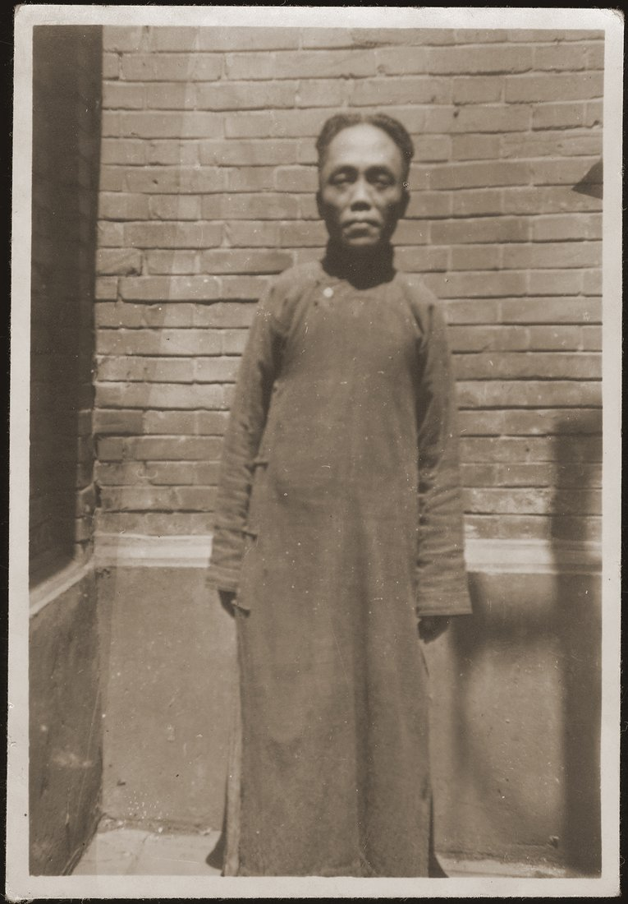
- Eric Goldstaub — after months of going from one consulate to the next, in July 1938 the Chinese consulate in Vienna gave him twenty visas, for his own relatives and for Harry Fiedler's parents. He photographed the streets of Shanghai for the next decade; four of those photographs are below.
- Lilith-Sylvia Doron met Ho Feng-Shan by chance in the street in Vienna in the days of the Anschluss, March 1938. Ho walked her home and kept coming back: as long as a diplomat sat in the room, he reasoned, the Nazis wouldn't dare to enter. Doron's brother Karl was taken to Dachau and got out on a Chinese consulate visa.
- Gerda Gottfried Kraus — after Kristallnacht her husband queued outside the Chinese consulate in Vienna. A car approached the gates and he pushed his application through the window as it passed. A telephone call came. The visas soon followed.
- Israel Singer's parents never went to Shanghai. They used their Chinese visas to exit the Reich, and ended up in Cuba.
- Jakob Rosenfeld, released from Buchenwald, escaped Austria on a Shanghai visa. He became a field doctor with the New Fourth and Eighth Route Armies, the Communist forces of the Chinese resistance against the Japanese occupation.
- David Ludwig Bloch, barred from the Munich Academy of Applied Arts and held four weeks in Dachau, reached Shanghai in April 1940. He started exhibiting his work within a year. Deaf from the age of one, he married Lilly Cheng Disiu (1916–1987), a deaf Chinese woman. They emigrated to the United States in March 1949.
- Chen, a translator for the city government, drew up Chinese civil marriage contracts for refugees.
- Alongside these are quieter encounters: a neighbor who took in a family; a man who rented a rickshaw to carry a refugee child to school and home again.
The argument
In Germany, Jews were excluded from national belonging. In Shanghai, they were read as Europeans — a classification that could place them above the Chinese among whom they lived.
On 29 September 1939 the Japanese-controlled Chinese-language Xin Shenbao ran an antisemitic conspiracy piece, "China and the Jewish Question"; on 16 February 1943 the Shanghai Times ran "Shanghai, Hunting Ground of Thriving Jewish Racketeers," by Tang Leang-li, an official of the puppet Wang Jingwei regime. However, Irene Eber — a Hebrew University sinologist whose documentary volume is the source for both pieces — records that the campaign failed in producing expressions of antisemitism among a Chinese population who "did not distinguish between one foreigner and another."
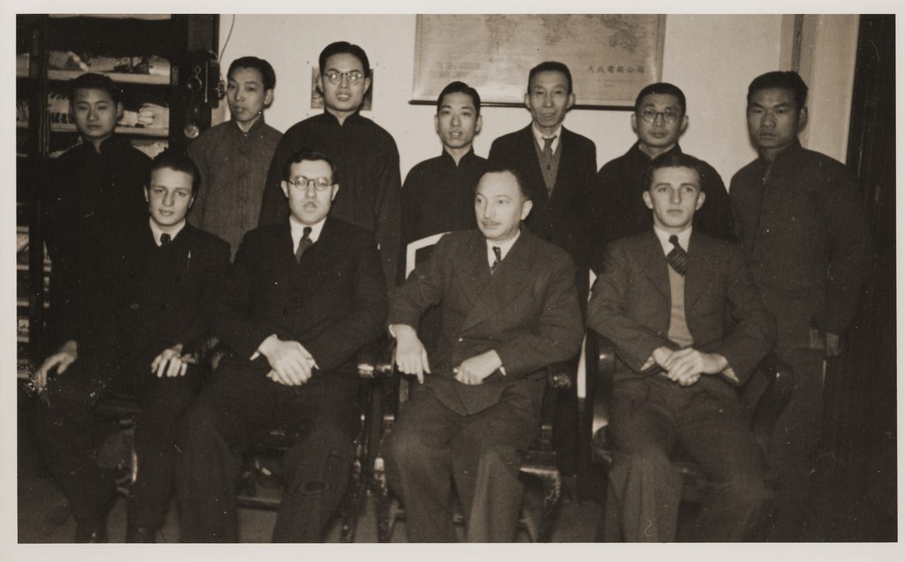
Displacement doesn't remove refugees from hierarchy. It relocates them.
This exhibition brings institutional documents into conversation with individuals' often-conflicting accounts of their own lives. For a hundred years, being European in Shanghai had meant standing outside Chinese law. On 11 January 1943 the United States and Britain relinquished extraterritoriality and their administration of the International Settlement. Five weeks later the Japanese administration ordered the refugees into a designated area of Hongkou, where roughly a hundred thousand Chinese already lived.
On 15 August 1945 the Japanese surrendered. The refugees were largely still stateless and still destitute, but relief now came from an army that had won, and there was somewhere to go. The Marine Falcon sailed 17 January 1947 with 952 refugees to Naples by way of the Suez Canal, on an American President Lines ship chartered by the United Nations Relief and Rehabilitation Administration. Their neighbors in Hongkou stayed.
Three exhibitions
In 1942 Bloch and others founded Arta, the Association of Jewish Artists and Friends of Jewish Art, with 64 members. It exhibited at Whiteaway, Laidlaw & Co. on Nanking Road and, in March 1944, inside the Designated Area. Our Life reported that Ghoya, of the Stateless Refugees Affairs Bureau, delivered the opening speech and "expressed his appreciation of the refugee artists' creative abilities." He also called himself "King of the Jews" and decided, month by month, which of them could leave the district to work — and sometimes withdrew that permission without cause.
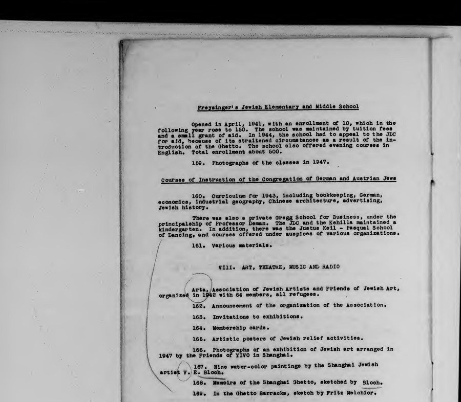
In December 1946 the YIVO Shanghai Branch mounted an Exhibition of Jewish Artists at the Shanghai Jewish School. Its catalogue foreword sets out YIVO's own task — the "collection of all material and proofs referring to the Jewish life in the past and now." In September 1948 YIVO — the Yiddish Scientific Institute — showed the work in New York City as Jewish Life in Shanghai. It was opened by its co-founder Max Weinreich, with Our Life's editor Menakhem Flaxer speaking.
The refugees were collecting evidence about themselves, inside the dispersal, while it was still happening. Eighty years later, these materials also allow us to examine the complicated social position of the people who assembled them.
In their own words
These Chinese vendors or salesmen, in their respective field, be it vegetable or fish or meat, it, unbelievably, would learn not only to speak German, but they would learn to speak Yiddish, with an Austrian dialect …
Susie Friedlander
And I learned Chinese on the job. All the mechanics were Chinese …
Paul Reisman, apprenticed among Chinese mechanics in Shanghai
And even the Chinese, when they understood that these were penniless refugees, they started to help … There were lots of rich Chinese people also in Shanghai who helped.
Eric Max Bergtraun, who reached Shanghai from Vienna after Kristallnacht, aged thirteen
The fact that you have Chinese servants … they're just part of the furniture. You don't consider them as people …
Mia Blocker, who reached Shanghai from Vienna in 1940
We had kosher Chinese food every Sunday for years and years.
Sasson Jacoby, of a Baghdadi family long settled in Shanghai — not a refugee
As we got older, the play tended to be more among ourselves.
Ralph Hirsch, who was nine when he arrived from Berlin
Oral histories, Shanghai Jewish Community Oral History Collection, Edmund S. Muskie Archives, Bates College.
Sections
- IViennaLeaving the Reich, and the visa that made it possible
- IIThe PassageTrieste to Shanghai, twenty-five days
- IIILittle ViennaHongkou, building a life
- IVThe Paper DiesFebruary 1943, the Designated Area
- VStatelessJapan's surrender, and the decisions that followed
- —Zai Jian 再見Leaving, and the neighbors who stayed
Selected objects
In rough chronological order.
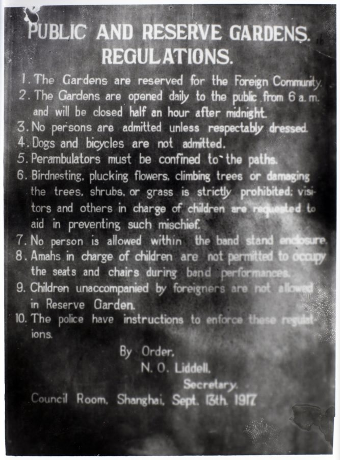

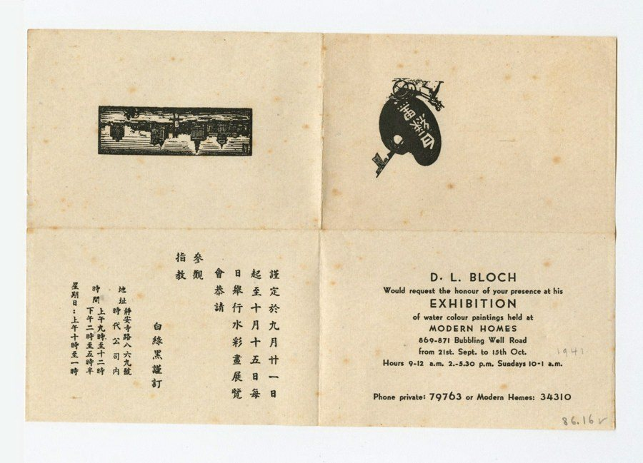
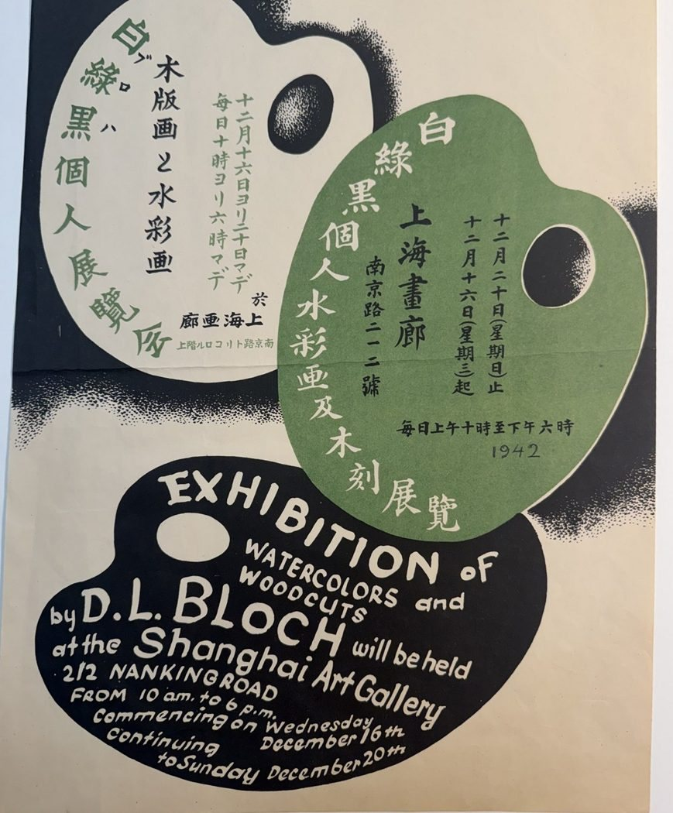

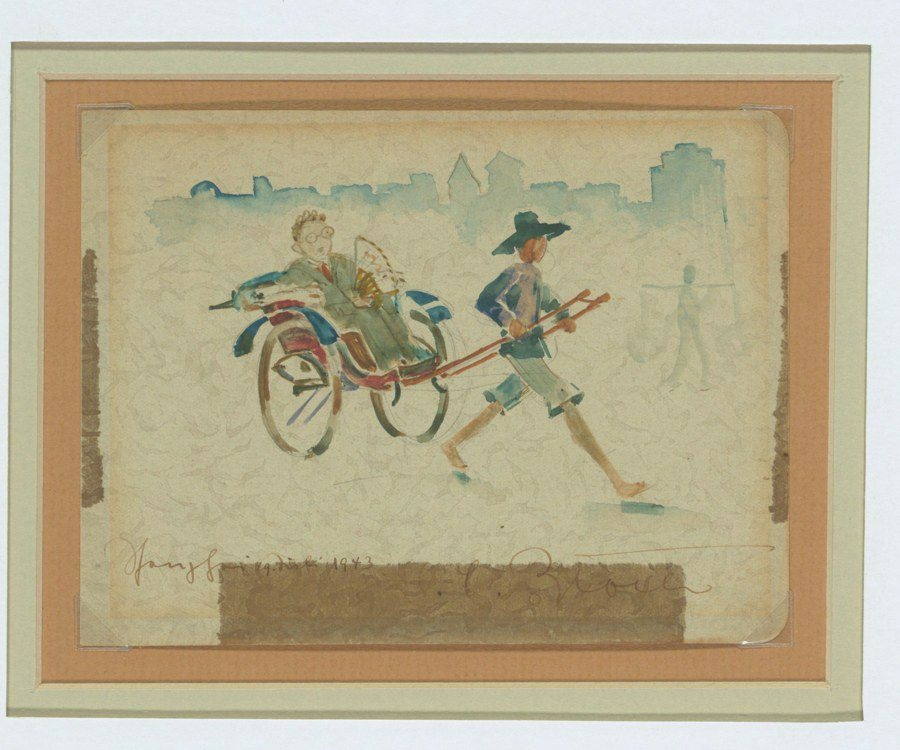

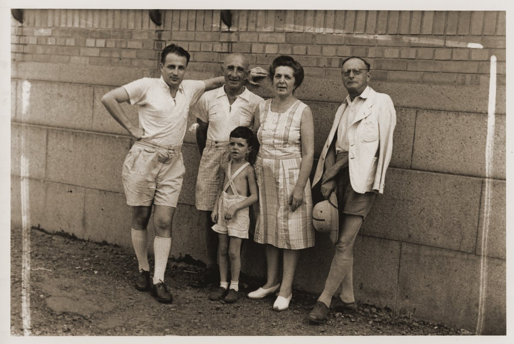
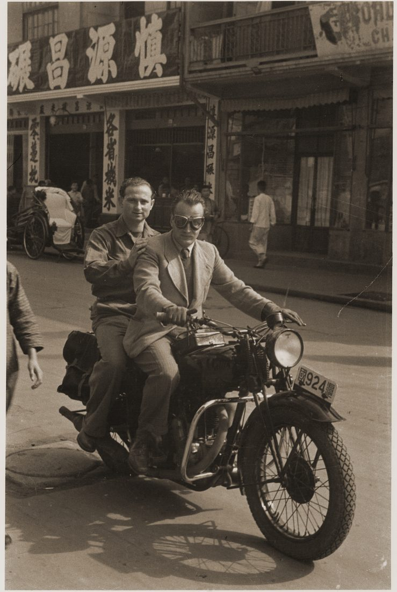
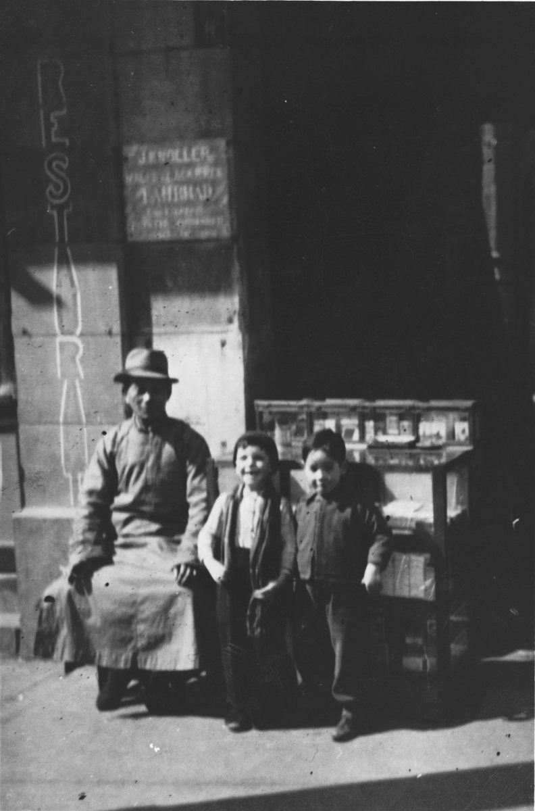
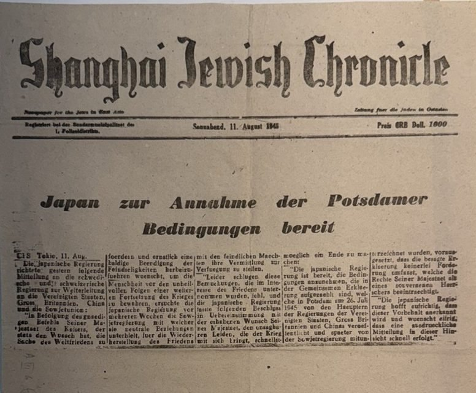
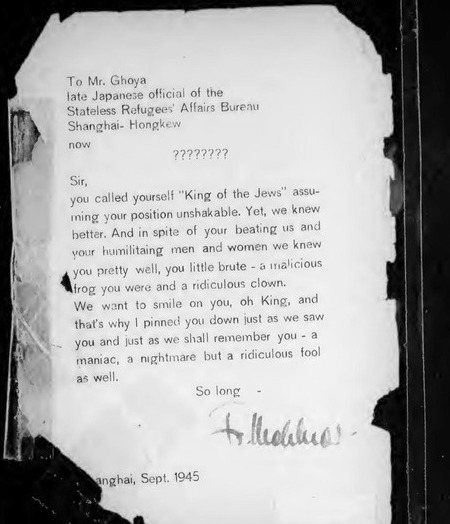
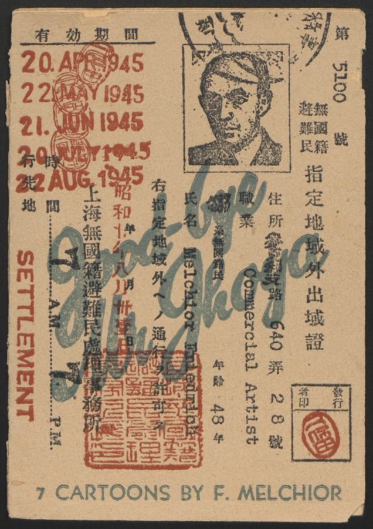
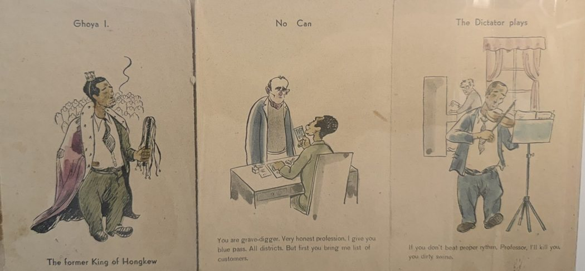
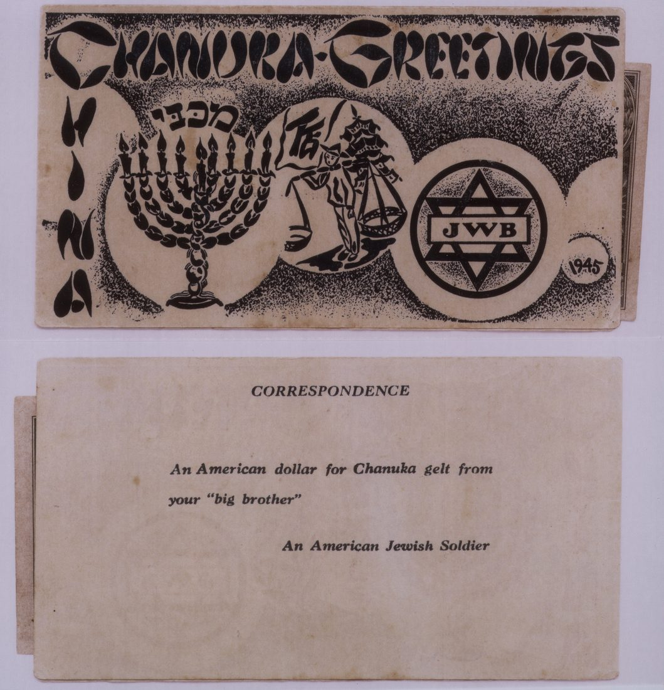

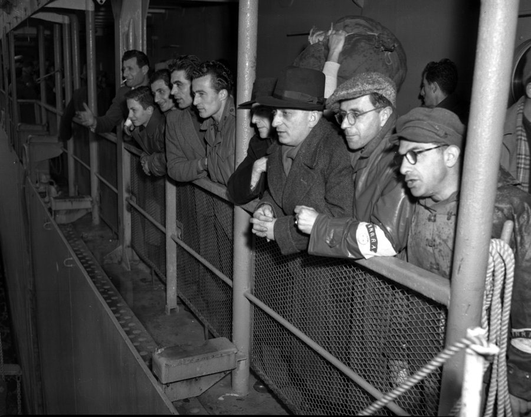
Practical
- Medium
- Archival reproductions printed on rigid panels, matte. Interpretive text prints with them. No originals, no vitrines, no glass.
- Format
- Research is complete, but nothing is fabricated yet, so this adapts to the space. The objects print at whatever size and onto whatever substrate the wall calls for, and sections drop out cleanly to fit a shorter run. The hang offered here is about 20 linear feet; at full length, 76 documents and photographs run to roughly 40.
- Availability
- Available any time through 22 September 2027.
Rights
Reproduction permissions secured from the Leo Baeck Institute (granted 22 September 2026, credited "Courtesy of the Leo Baeck Institute"); Yad Vashem (granted 6 October 2026, fee waived, credited "Yad Vashem Photo Archive, Jerusalem" with the item's archival signature); Historical Photographs of China, University of Bristol (granted, fees waived); The Bancroft Library, UC Berkeley; and the Edmund S. Muskie Archives, Bates College. United States Holocaust Memorial Museum material is cleared for non-commercial exhibition use under the museum’s own Terms of Use, §C. United Nations Archives material carries no publication restriction under that archive’s stated terms. Others are pending. Every image on this page is a reproduction; no originals travel. A full object list with each item's caption and permission status is available on request, as is a hanging plan once a space is known.
Contact
joyce_fu@alumni.brown.edu